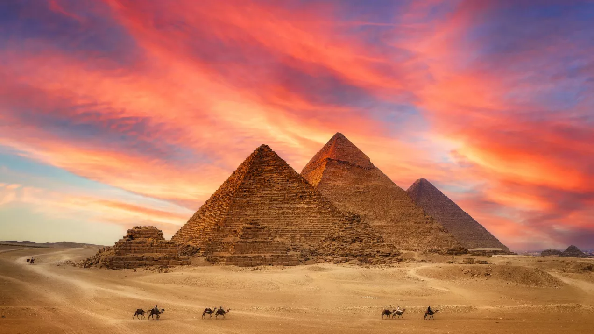
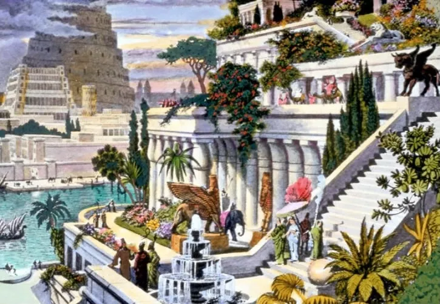
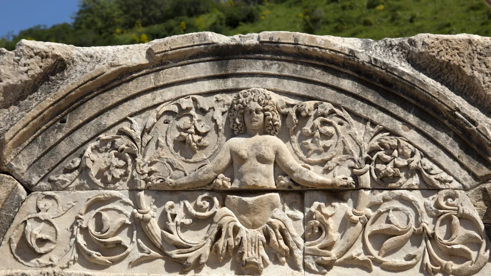
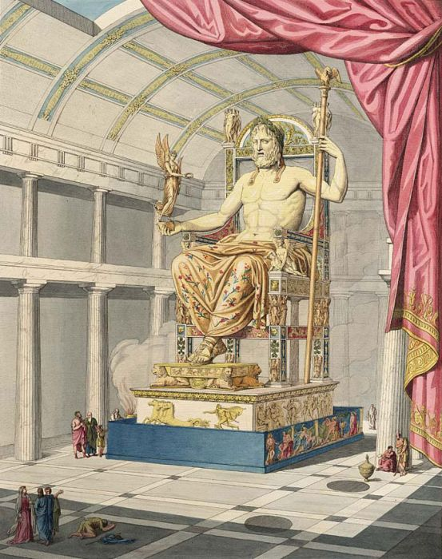
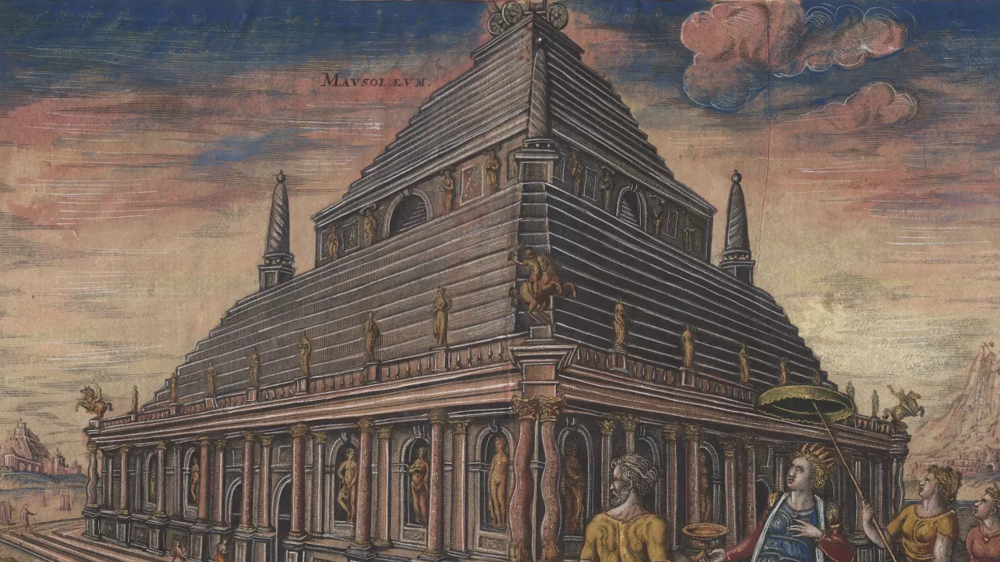
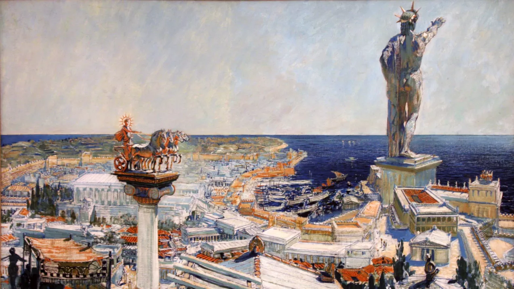
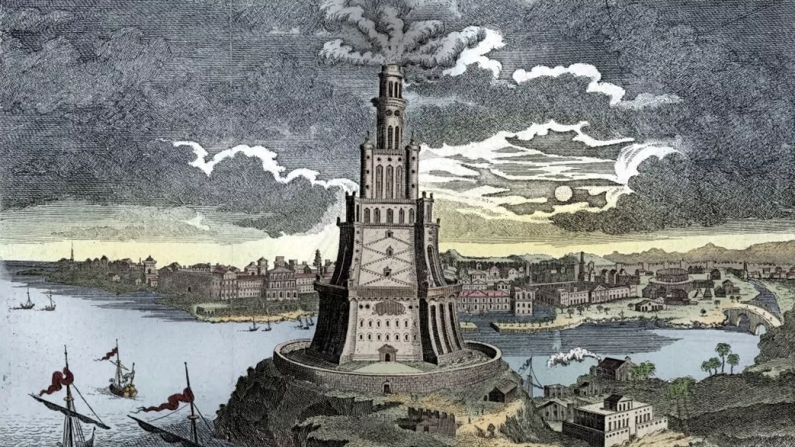

Piramida Cheopsa to nie tylko symbol cywilizacji egipskiej, ale też jedna z największych i najtrwalszych budowali, jaka kiedykolwiek została stworzona przez ludzi. Od pozostałych siedmiu cudów świata starożytnego odróżnia się tym, że jest stosunkowo nienaruszona.
Dowiedz się więcej

Ten najbardziej tajemniczy z cudów najprawdopodobniej upiększał Babilon, wspaniałą stolicę-twierdzę króla Nabuchodonozora II. Ów potężny władca żył między 605 a 562 rokiem p.n.e. Zapisał się w historii jako wielki budowniczy, ale też ten, który najechał i splądrował Jerozolimę.
Dowiedz się więcej

Najważniejszy w całym świecie antycznym był Artemizjon położony w polis o nazwie Efez, nad rzeką Kayster. Miasto znajdowało się na wybrzeżu Morza Jońskiego w Azji Mniejszej. Lokalna świątynia Artemidy została zaliczona do siedmiu cudów świata starożytnego. Niestety, monumentalna świątynia nie dotrwała do naszych czasów.
Dowiedz się więcej

Z oczywistych względów musiał budzić podziw i być najwspanialszym ze wszystkich. Wszak przedstawiał najważniejszego z bogów mitologii greckiej – samego Zeusa. 12-metrowy posąg władcy nieba i ziemi dostojnie siedzącego na tronie miał uświetnić jego świątynię w Olimpii.
Dowiedz się więcej

Halikarnas to starożytne miasto położone nad Morzem Egejskim, które założyli greccy koloniści w Karii. Znajduje się na terytorium współczesnej Turcji, w Bodrum. Miejsce to słynęło z mauzoleum wzniesionego w połowie IV wieku p.n.e. Budynek uważany jest za jeden z siedmiu antycznych cudów świata.
Dowiedz się więcej

Kogo przedstawiał Kolos z Rodos? Grecki bóg odwzorowany na monumentalnej rzeźbie to główny patron wyspy Rodos. Był nim Helios, czasem utożsamiany z Apollem. Bóg ten związany był z kultem słońca. Na greckiej wyspie Rodos od wieków kult solarny był silny i traktowany często przez resztę Greków jako egzotyczny.
Dowiedz się więcej

Aleksandryjska latarnia morska, w starożytności zlokalizowana na północno-wschodnim cyplu wyspy Faros, była największą budowlą Aleksandrii. Zresztą nie tylko Aleksandrii, bo na całym ówczesnym świecie nikt nie wzniósł wyższej konstrukcji. Ze stałym lądem łączył ją wał ziemny, który w wyniku działania naturalnych procesów przez wieki zwiększał swoją szerokość i dziś jest szerokim na 1,5 km półwyspem.
Dowiedz się więcej